Statistics 101
An Introduction to Statistical Hypothesis Testing
Each and every day of our lives we make hypotheses. Which route to work will be shorter in morning traffic? How much will a doctor’s appointment cost? We use the information we have at our disposal and then we take actions informed by our hypotheses. This type of hypothesis testing might be adequate for our day-to-day lives but what if we wanted a more accurate and precise method?
Statistical Hypothesis Testing
To demonstrate the use of statistical hypothesis testing, we will use Oregon housing data
from the American Community Survey to investigate whether people living in apartments pay
less in electricity than those living in houses.
To answer the question of whether people living in apartments pay less in electricity than those living in houses, we must specify a model that captures the relationship between household type and monthly electricity cost while controlling for confounding variables. Our response (dependent) variable is monthly electricity cost, and our explanatory (independent) variable is housing type (apartment or house). We will also include explanatory variables for the number of tenants, and the number of bedrooms in the housing unit. By including these extra explanatory variables, we can control for their effects on electricity cost thereby isolating the relationship between electricity and housing type.
The model form we will choose to represent this relationship is a Multiple Linear Regression because MLRs model relationships between one quantitative dependent variable (Electricity) and multiple independent variables using a straight line. How do we know that the relationship between electricity and our chosen independent variables are straight lines? We can plot electricity against all our independent variables to see.
All our independent variables: housing type, household size, and number of bedrooms are discrete meaning that they can only take on distinct values. You can’t have 1.7 people living in a household, for example. Housing type is a nominal variable: it has two or more categories that have no intrinsic ordering. Nominal variables cannot violate the linearity assumption. Let’s take a look at the graph for electricity vs. the household size:
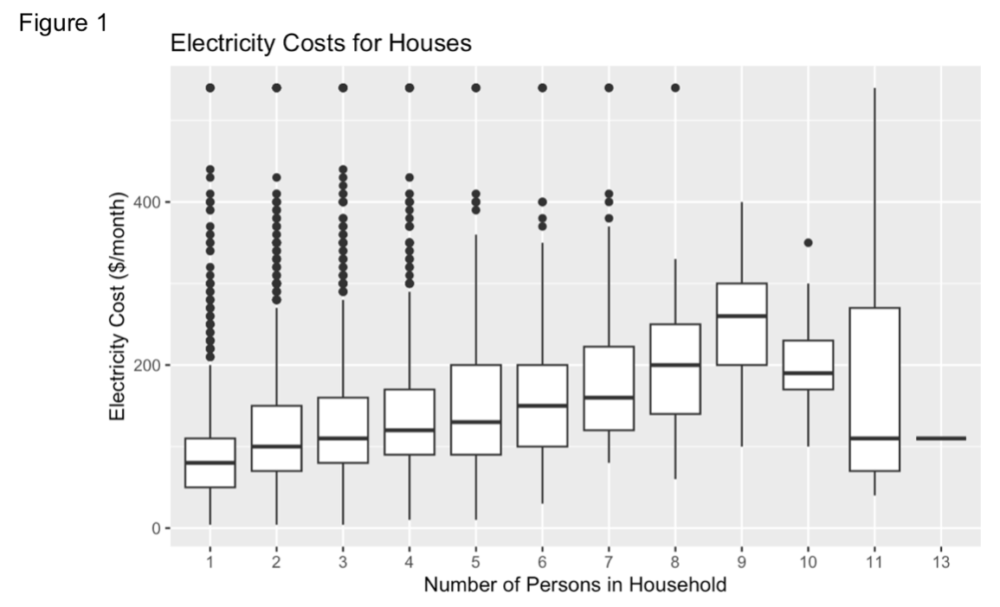The relationship between electricity and the household size seems to be linear until the household size is 10. This could be because there are not many observations for larger household sizes. Let’s look at the number of observations by household size:
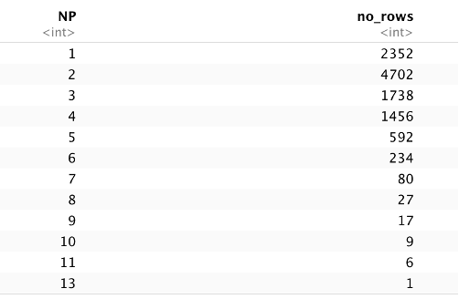After household size = 9 people, there are less than 10 observations for each household size and household size = 13 people only has one observation. Let’s assume that we would see a linear relationship between household size and electricity cost if all the household size categories had more than 15-30 observations. Let’s look at the other plots:
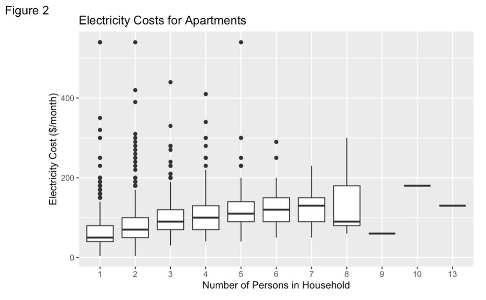We’re having the same problem for apartment electricity costs that is also probably due to the low sample sizes at higher household sizes.
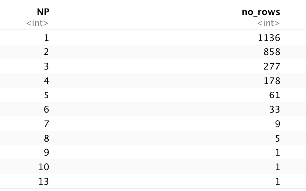We’ll assume that this relationship is also linear. Next, let’s look at the electricity vs. bedroom plots:
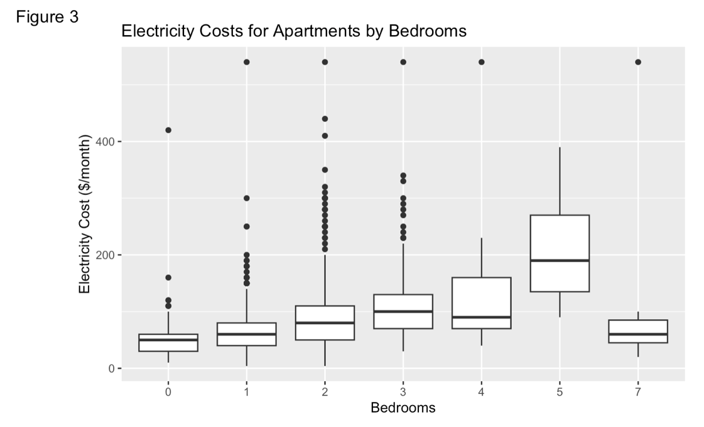 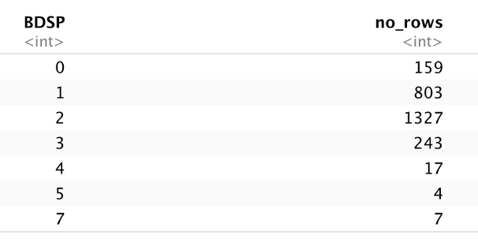 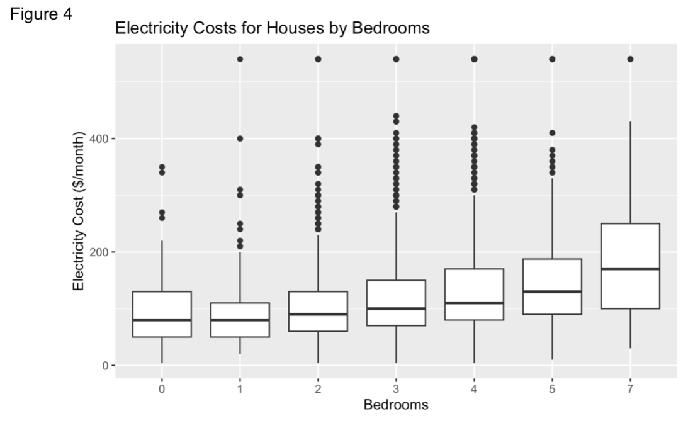 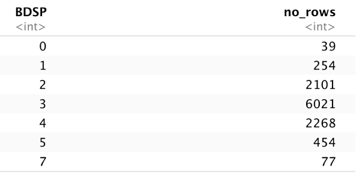The electricity costs for apartments by bedrooms plot seems to also have the problem of low sample sizes at higher numbers of bedrooms but the electricity costs for houses plot does not have this problem. We’ve checked all our plots and they look like they all follow an approximately linear relationship.
What are the other assumptions for Multiple Linear Regression models?
1. Normality - The residuals (AKA the errors) of the model are normally distributed
(symmetrically distributed around the mean where data points closer to the mean
occur more frequently than data points that are further away from the mean)
2. Multicollinearity – The independent variables are not highly correlated with
each other. Adding variables that are correlated to the model means that we are being
redundant with the information we’re providing to the model.
3. Constant Variance – the variance of the residuals should be constant for all values
of independent variables.
4. Independence – the observations should be independent from each other meaning
that the value of one observation doesn’t influence the value of the other observations.
Let’s go through these in more detail.
Normality
Let’s look at the normality assumption first by plotting the residuals (errors) against the fitted values. The fitted values are the values of the response variable (electricity) that are predicted by our model based on the data given to the model (the training data). The residuals are just the predicted (fitted) values minus the true electricity cost for each data point (AKA the errors). The red dotted line indicates the zero-error line (where the electricity cost predicted by the model equals the true electricity cost).
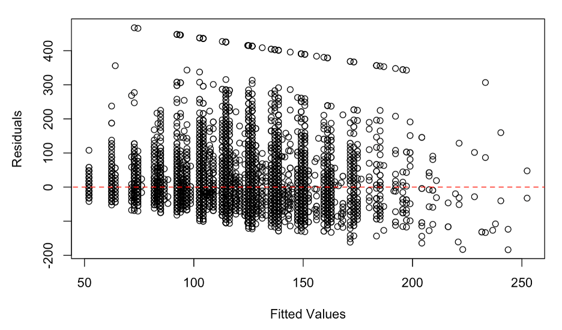There appears to be a violation of the normality assumption since most values are situated above the 0 line, indicating a skew to the right. This violation is not of much concern since the sample size is large, allowing us to apply the Central Limit Theorem. Additionally, it should be noted that the line at the top of the .resid vs .fitted graph, separate from the other points, appears to suggest that our model makes predictions for electricity cost that are much higher than they should be. However, the sampling method for electricity caused the variable to be "top-coded" meaning that it is truncated at $999 and, in this case, the model's predictions may actually be more accurate than the recorded data. This is something to consider as a limitation.
Multicollinearity
To test for multicollinearity, we can use the Variance Inflation Factor (VIF) which estimates how much a regression coefficient’s variance is inflated by multicollinearity. The regression coefficient is the independent variable’s corresponding coefficient in the model equation. Here are the VIFs for our regression coefficients:
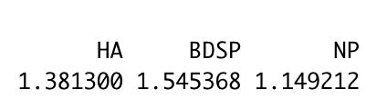The general rule is that if the VIFs are below five, then there is no multicollinearity present in the regression coefficients. In our case, it looks like there is no multicollinearity. If any of your VIFs are above 5 (and definitely if they are above 10), you can consider removing those variables from the model.
Constant Variance
To test for constant variance, we can observe the residuals vs. independent variable plots. The variance of the residuals should be constant for all values of independent variables.
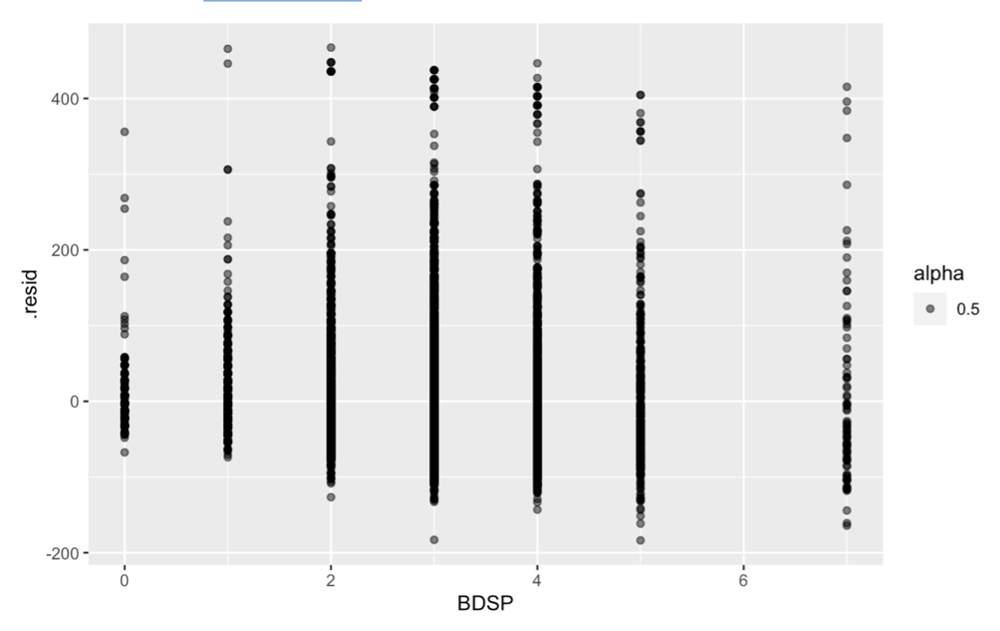 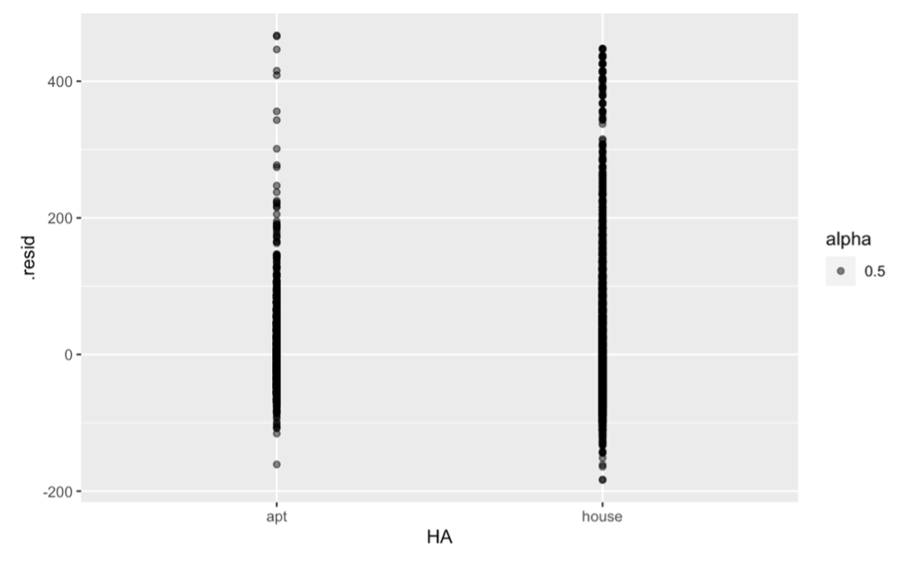 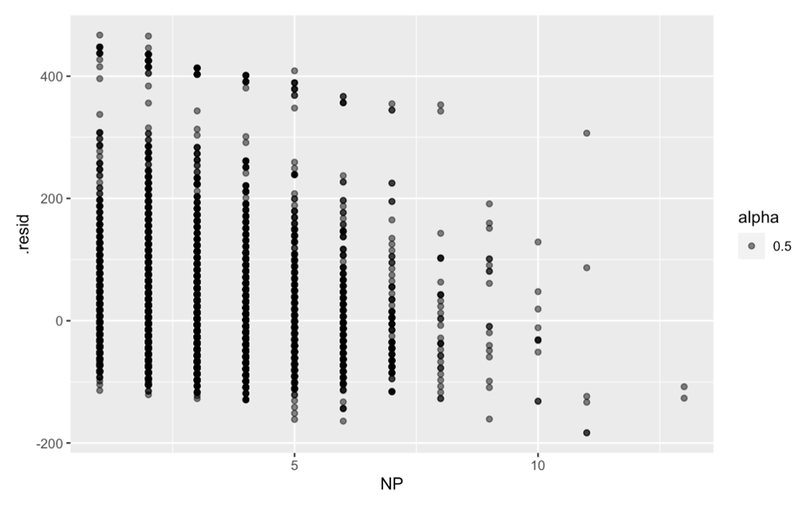The residuals vs bedrooms (BDSP) plot and the residuals vs household type (HA) plot appear to meet the constant variance assumption. There may be non-constant variance from left to right in the residuals vs. household size (NP) plot, however this may be explained by less observations at high NP values. We will assume constant variance due to the small samples at larger household sizes.
Independence
The independence assumption can be assessed by thinking about the sampling techniques used to obtain the data. Randomly sampled data can ensure that any confounding variables are evenly distributed across groups and that the sample is representative of the population it came from since each unit is equally likely to be selected.
In our case, the housing units were sampled using systematic sampling where cases are randomly selected at a regular interval. Since each household was sampled randomly, it means that we can extend our inference to all households in Oregon (that have at least one tenant, pay for their electricity, and are not group accommodation) because those households are theoretically represented by the sample.
Model Fitting
Now that we’ve justified every assumption, we can move on with fitting our multiple
linear regression model.
The following model describes the relationship between monthly electricity cost for a
housing unit (ELEPi), the number of occupants within the household (NP), the number of
bedrooms in the household (BDSP) and whether the household is a house or an apartment
(housei= 1 if house, 0 if apt). The error in the estimate is given by epsiloni.
ELEPi = beta0 + beta1NP + beta2BDSP + beta3housei + epsiloni
Each beta coefficient beta1, beta2, beta3) determines the strength of the effect of its corresponding variable (NP, BDSP, housei). If beta3, the coefficient corresponding to the housing type variable, is equal to 0 then the housing type has no effect on electricity cost, and we can conclude that people living in apartments and those living in houses pay the same in electricity when accounting for the home’s occupancy and number of bedrooms. To test if beta3= 0, we can use a Student's T-test.
T-Test
The Student's t-test, first described by William Sealy Gosset in 1908, is used to
test a statistical hypothesis when the test-statistic follows a Student's T-distribution
(Student, 1908). The t-test has two assumptions:
1. Normality - the sample mean should follow a normal
distribution (under the Central Limit Theorem, large samples will
approximately follow a normal distribution)
2. Independence - the observations should be independent from each other.
We’ve already justified these assumptions since they’re the same as in the
multiple regression model. The next step is to construct null and alternative hypotheses.
The null hypothesis is always the “uninteresting” claim – the one that predicts no relationship
or no effects. In our case, its:
Null Hypothesis: Houses and apartments have the same electricity costs when controlling
for number of bedrooms and occupancy.
In proper mathematical form, we’d write it as:
H0: beta3 = 0
Where H0 denotes the null hypothesis and beta3 is the coefficient corresponding
to the housing type variable.
And the alternative hypothesis is the alternate answer to our question. In this case its:
Alternative Hypothesis: Houses have higher electricity costs than apartments when controlling
for number of bedrooms and occupancy.
Or in proper mathematical form,
H0: beta3 > 0
When we run the t-test in r, we get these results:
The resulting estimate is the model’s estimated coefficient for the corresponding independent variable and the standard error gives the standard deviation of the sampling distribution for that coefficient. You can add the standard error or subtract it from the estimate to get the upper and lower confidence intervals, respectively. The confidence interval gives a range of values that you expect the coefficient to fall between. To get the 95% confidence interval you need to add or subtract two standard errors from the estimate because according to the Central Limit Theorem, 95% of values will fall within 2 standard deviations of the mean. In this case, our mean is the coefficient estimate and the standard deviations are the standard error for that estimate.
The p-value gives the probability, assuming that the null hypothesis is true, of getting
a result as or more extreme than the observed result. For example, say that I predict that
50% of my school would choose to eat vanilla ice cream rather than chocolate but my study
results showed that only 20% of students at my school would choose vanilla. If I conducted
a t-test to test the hypothesis that the proportion of students who prefer vanilla is 50%,
we could calculate the probability of getting a study result of 20%. If observing a
proportion of 20% is very unlikely assuming that the null hypothesis is true, then the
null hypothesis is likely untrue. Typically, if the p-value falls below 0.05 (for 95%
confidence), we reject the null hypothesis. Other common significance levels (the cut-off
number used for deciding whether to reject the null hypothesis) are 0.01 (99% Confidence),
and 0.1 (90% Confidence). The t-value or test statistic pairs well with the p-value because
it is a value used to reject or fail to reject the null hypothesis.
Now that we know what all of the values in the table are, let’s construct our decision.
With a p-value of less than 2.2e-16, we reject the null hypothesis that β3 = 0 (Table 3). In other words, housing type does have an effect on monthly electricity cost. With 95% confidence, people who live in houses pay between $15.96 and $22.99 more in electricity per month, on average, than those living in apartments while controlling for the number of bedrooms and the number of occupants in the household (Table 4).
Conclusion
Statistical hypothesis tests are much more involved than the hypothesis tests we construct in our day-to-day lives. They involve careful data collection strategy, data analysis strategy, estimation of our uncertainty, and efforts to reduce bias.
Recent Comments